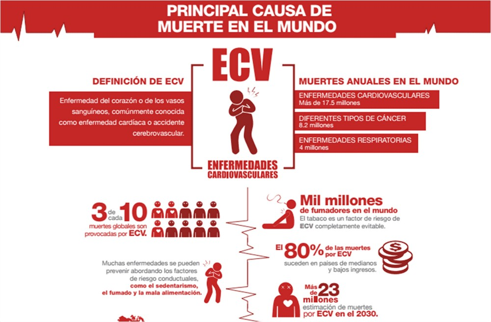
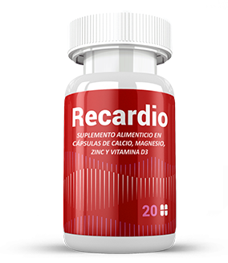

Cómo vencer la hipertensión y otras enfermedades cardíacas y vasculares: cuentan médicos de la principal clínica de cardiología de Guatemala
Las estadísticas dicen que el mayor porcentaje de mortalidad en el planeta es por enfermedades del sistema cardiovascular. Las enfermedades del corazón y los vasos sanguíneos no tienen piedad de los ricos ni de los pobres. En algunas áreas de Guatemala, los medicamentos para la hipertensión, la isquemia, la insuficiencia cardíaca, la angina de pecho, las arritmias y otros problemas con el sistema de suministro de sangre del cuerpo simplemente no están disponibles. En aquellos lugares donde se pueden comprar medicamentos, su costo no siempre corresponde a las capacidades de los pacientes.

¿Cómo resolver el problema de deshacerse de las enfermedades del corazón y los vasos sanguíneos? ¿Qué remedio o medicamento ayuda rápida y eficazmente contra la hipertensión?
Estas y otras preguntas importantes sobre la salud son respondidas por los médicos de la principal clínica de salud cardíaca y cardiovascular de Guatemala, Cardio Care.
El Dr. José Ricardo Muñoz Molina ES cardiólogo y director ejecutivo de la clínica Cardio Care. Se graduó en el Instituto nacional de Cardiología Ignacio Chávez de la ciudad de México en 1986 con las subespecialidades de ecocardiografía doppler en color y cardiología intervencionista. Trabaja en la clínica Cardio Care desde el año 2000. Cardiólogo en la unidad de hemodinámica del hospital Centro Médico, desde 1988 hasta la actualidad. Director general de CRC desde 2010 hasta la actualidad.
Durante muchos años como cardiólogo, he desarrollado una opinión profesional sobre la mejor manera de combatir las enfermedades vasculares y cardíacas. De hecho, es la principal causa de mortalidad en nuestro país y en todo el mundo. Trabajo con una variedad de casos y pacientes de diferentes orígenes. La participación en el desarrollo moderno y el uso de equipos de diagnóstico innovadores me dieron una imagen completa de lo importante que es proteger mi corazón y prevenir el desarrollo de isquemia, aterosclerosis y otras enfermedades cardiovasculares.
¿Qué tan grave es la situación en Guatemala con las muertes por problemas en el sistema de suministro de sangre del organismo?
La situación es realmente triste. E incluso, a pesar del hecho de que en nuestro país funcionan clínicas como Cardio Care, casi el 30% de las muertes se producen en pacientes que sufren de problemas cardíacos. Según los resultados de las encuestas, más del 65% de las personas que acuden a centros médicos especializados y hospitales convencionales necesitan tratamiento cardiovascular.
¿Qué lleva a las personas a tales diagnósticos? ¿Qué desgasta tan rápido el corazón y los vasos sanguíneos?
La razón principal del rápido desgaste del músculo cardíaco y el sistema circulatorio, por supuesto, es un estilo de vida sedentario. Esta es la razón principal por la que acuden a los médicos con quejas de presión alta y dolor en el pecho y la cabeza. Agregue a esto el estrés frecuente, el tabaquismo, el consumo excesivo de alcohol y los alimentos grasos. Aquí hay un conjunto de razones por las que tenemos sangre deteriorada, el corazón produce su recurso más rápido y los vasos sanguíneos se ensucian, se obstruyen y estallan.
¿Qué puede aconsejar para reducir el riesgo de tales enfermedades y tratarlas a aquellos que no pueden pagar medicamentos y procedimientos costosos?
Por supuesto, cada caso necesita un enfoque individual. Para el tratamiento y la prevención específicos integrales, es necesario establecer una imagen precisa para cada paciente individualmente. Pero la gama de medicamentos disponibles, desafortunadamente, no es lo suficientemente amplia como para abordar un problema individual con la máxima eficacia. Por lo tanto, aconsejamos a todos que, en primer lugar, presten atención al fortalecimiento general del sistema cardiovascular. Tales medidas son relevantes después de las operaciones y durante el período de tratamiento de manera no quirúrgica. Es importante recordar lo principal: las píldoras deben tomarse antes de enfermarse. Esta es la mejor manera de prevenir la enfermedad por completo o retrasar en el tiempo el desarrollo de procesos negativos en el cuerpo, en la medida de lo posible.
Y, sin embargo, ¿hay alguna panacea (por ejemplo, para la hipertensión) que todos puedan pagar?
En la antigua Grecia vivió el médico y sanador Hipócrates. Él dijo: «Tu comida debe ser tu medicina al mismo tiempo». Agregue alimentos tónicos a su dieta: uvas, espino cerval de mar, cúrcuma, fresas y ajo. El amaranto y el ajo silvestre ayudan a restaurar rápidamente los tejidos del cuerpo (incluidos los vasos sanguíneos y el corazón). El hibisco, el amaranto y cualquier producto con contenido de ácidos Omega-3 tienen un efecto beneficioso sobre la composición de la sangre y la elasticidad de los tejidos de los vasos sanguíneos y el corazón. Estos pueden ser nueces, atún, sardinas, calamares, ostras, arenque y otros peces.
EXPERTOS DE CORAZÓN José Luis Alvarado Sosa (José Luis Alvarado sosa) — médico-cardiólogo. Trabaja en la clínica Cardio Care desde 2018. Especialista integral en el tratamiento de enfermedades cardiovasculares (presión arterial alta, aterosclerosis, insuficiencia cardíaca, enfermedad coronaria, etc.). Asistente de cardiología en el hospital Herrera Llerandi, Guatemala.
Dígame, ¿cómo ser aquellas personas que no tienen el deseo de tener hipertensión en el futuro o aquellos que no pueden pagar el costoso tratamiento de los efectos de la presión arterial alta?
En este caso, la única salida correcta es tener cuidado de no enfermarse. Es necesario moverse más, tener menos contacto con sustancias tóxicas, comer la comida correcta. Esto se aplica a la prevención de enfermedades cardíacas y vasculares. Pero para el tratamiento de formas simples y asequibles, hay medios baratos. Por lo general, incluyen extractos y extractos de plantas y alimentos de origen animal. Comprar el 80% de estos suplementos no requiere grandes costos financieros. Al mismo tiempo, se muestran como medios bastante efectivos.
¿Cuál de estos remedios puede recomendar?
Por mi propia experiencia, sé que recientemente ha demostrado ser excelente . Es un medio de efectos complejos en el cuerpo, que ayuda a estabilizar el corazón y los vasos sanguíneos, reduce la presión, mejora la calidad de la sangre, libera el sistema cardiovascular de toxinas y grasas. Al mismo tiempo, estabiliza el sistema endocrino y la hemoglobina en la sangre, alivia las complicaciones reumáticas y mejora la función cerebral.
¿Hay alguna restricción para tomar ?
Aquí también hay una lealtad casi absoluta de los fondos. Los estudios de laboratorio y las revisiones de nuestros pacientes que tomaron este remedio sugieren que no debe usarse solo si es alérgico a:
- hibiscus;
- amaranto;
- variedades individuales de pescado (arenque, caballa, sardina, trucha).
Pero estos son tipos muy raros de alergias. Así que el 99% de la gente puede comprar con seguridad. Dosis para adultos — 1 cápsula 2 veces al día.
EXPERTOS DE CORAZÓN Jennifer Estrada — cardióloga del Instituto Nacional de Cardiología Ignacio Chávez en la ciudad de México desde 2017 con especialización en electrofisiología cardíaca. Se unió a Cardio Care en 2021. Experto en el diagnóstico y tratamiento de arritmias cardíacas, así como en la implantación y el control de dispositivos de insuficiencia cardíaca y marcapasos.
Hablamos de la medicina . ¿Qué opinas de su eficacia en el tratamiento de la hipertensión y otras enfermedades cardíacas y vasculares?
Oh, es un remedio efectivo. Pero la droga no se puede llamar. Después de todo, no se requiere una receta para adquirirla y consumirla. Los estudios han demostrado que contribuye a la rápida recuperación de enfermedades y cirugías. Además, las propiedades beneficiosas de este suplemento se refieren no solo al sistema cardiovascular.
¿Y qué propiedades útiles tiene en su opinión?
Sobre los beneficios de este suplemento, en primer lugar, dice la experiencia de quienes lo tomaron. Y mi opinión, incluso como especialista en el campo de la cardiología, aquí se basa en la práctica de la aplicación. Los pacientes que tomaron notan que no solo redujeron a cero la intensidad de los síntomas de hipertensión: picos de presión, ruido en la cabeza, mareos y palpitaciones del corazón. Casi todos confirman que su estado general ha mejorado, su nivel de inmunidad ha aumentado, su visión se ha estabilizado, su memoria y su sueño han mejorado.

¿A qué se debe este efecto positivo de ?
Lo mismo que los medios para resolver otros problemas con el cuerpo, si incluyen los mismos componentes potentes y efectivos en su composición. Los principales componentes son semillas de amaranto, extracto de hibisco y ácido Omega-3.
- Las semillas de amaranto contienen vitaminas del complejo B y ácido fólico. Este componente actúa como un regulador del metabolismo. Ayuda a deshacerse de las toxinas y las grasas dañinas, eliminar los síntomas de la hipertensión, la aterosclerosis, fortalecer las paredes de los vasos sanguíneos y tiene un efecto restaurador en todo el cuerpo.
- El hibisco contiene antioxidantes y flavonoides. Este componente regula armoniosamente el nivel de colesterol y la presión en el sistema cardiovascular, es un antipirético natural, limpia perfectamente el estómago y el uréter.
- El ácido Omega-3 es el medio principal para normalizar la presión y fortalecer las paredes de los vasos sanguíneos. Además de sus efectos curativos en el corazón y los vasos sanguíneos, este ácido ayuda a estabilizar el suministro de sangre al cerebro y es un material de construcción para la formación de membranas neuronales y moléculas que transmiten información entre las células del sistema inmune.
El uso de estos componentes en un solo paquete tiene un efecto positivo sorprendente. Las heridas se curan rápidamente, la inflamación desaparece, la calidad de la sangre y la presión vuelven a la normalidad.

¿A quién puedes aconsejar que tome primero?
Es un remedio complejo. Pero sobre todo, recomiendo tomarlo para tratar y prevenir tales enfermedades y síntomas:
- Hipertensión (presión elevada).
- Dolor en el pecho.
- Anemia.
- Accidente cerebrovascular en la historia clínica.
- Saltos de presión.
- Estado preinfarto.
- Fragilidad y permeabilidad vascular.
- Mala memoria,
- Disminución de la capacidad mental.
- Entumecimiento de las extremidades.
Para muchas enfermedades de esta lista, se necesita confirmación médica. No haga el diagnóstico usted mismo. Para hacer un diagnóstico correcto, es mejor consultar a un profesional.
¿Es posible aislar o consumir hibisco, amaranto y Omega-3 directamente de los alimentos?
Con el fin de lograr el mismo efecto que la recepción de un producto terminado, tendrá que abrir un pequeño laboratorio. Comer tanto amaranto y obtener nutrientes de él a la vez es simplemente imposible. Lo mismo ocurre con hibisco y Omega-3. Será un gran estrés para el cuerpo si intenta extraer la porción correcta de componentes saludables directamente de los productos. Y aquí ya no se puede hablar de la acción medicinal de su comida. En este caso, preferiría convertirse en tu enemigo que en un amigo.
¿Dónde puedo comprar ?
Esta es una herramienta bastante rara y, oficialmente, todavía es difícil obtenerla con descuentos del estado. Tiene que esperar mucho tiempo, y un número limitado de paquetes se libera en una mano. Pero las ventas de este producto fueron asumidas por vendedores de buena fe. Abren sitios especiales para la venta de , donde se puede pedir con entrega a un precio bastante asequible.
Le agradecemos a usted y a sus colegas de la clínica por una consulta tan detallada. Usted ha ayudado a miles de personas a aprender cómo prevenir y tratar la hipertensión y otras enfermedades vasculares y cardíacas con un remedio simple.
Siempre estamos encantados de ayudar. Esperamos que ahora haya más personas sanas y, gracias a , ya no tenga que ir a los médicos.
Lo compré para mi madre y para mí. Confío plenamente en los médicos de esta clínica porque curaron a mi madre. ¡Espero que ni yo ni mi hijo tengamos problemas cardíacos y de presión ahora!
Leí que con la ayuda de no solo puedes ayudar a tu corazón, sino también a perder peso. ¡Muchas gracias que los médicos me ayudaron en esto y aconsejaron esta herramienta!
¡Muchas gracias por una historia tan detallada! Definitivamente ordenaré yo mismo y asesoraré a todos. ¡Qué puede ser más caro que tu propia salud! ¡Y hay que cuidarlo de antemano!
¡Lo siento mucho por mi hijo! ¡Es tan amable y divertido, tan bueno, incluso cuando está de mal humor! Compró para su hijo para ayudarlo a sentirse bien. Fue a su clínica y le trataron de hipertensión. Muchas gracias a la doctora Jennifer Estrada por su ayuda y por no haber pasado por nuestra desgracia, ayudándola con todas sus fuerzas. ¡Les deseo a todos sus médicos la paciencia y la Gracia de Dios!!!!
Tengo aterosclerosis. Dígame, Doctor, ¿qué me ayudará a curarme? ¡Estoy aterrorizada!
Maritza J Bran, hola. Hay que entrar en pánico. La aterosclerosis no es una sentencia. Si la enfermedad acaba de comenzar a desarrollarse, se puede curar. Especialmente porque su cuerpo es joven y lo ayudará a lidiar con la enfermedad con el tratamiento adecuado. Ven a nuestra consulta y lo averiguaremos todo. Sospecho que un medicamento ligero en combinación con será suficiente para usted. Todo va a estar bien.
¡Doctor, gracias! ¡Que Dios los bendiga! Tengo una cita con usted.
Es muy difícil para mi padre recuperarse de una operación de corazón. Los médicos me aconsejaron incluso antes de su cirugía, pero no pudieron llegar a ninguna parte. Ahora en este sitio pedí varios paquetes a la vez. Espero que esto ayude a papá a recuperarse y vivir mucho tiempo. Cómo será el proceso de recuperación-escribiré más tarde.
¿Por qué escribes todo esto?! ¿No lo entiende??? Cuando estás en el umbral entre la vida y la muerte, ¡ya no importa! Y es necesario pensar en su salud de antemano, para que luego no sea una lástima. ¡Les deseo a todos salud!
Rodrigo Alvarez, te apoyo totalmente. Ahora consulté a un médico a partir de qué edad se pueden administrar tales suplementos a un niño. Es mejor prevenir la enfermedad que sufrir toda la vida.
Audy A. Méndez, hola. No hay contraindicaciones para recibir por edad. Solo si su hijo tiene alergias al hibisco, pescado o amaranto. Simplemente reduzca la dosis. Pero, de todos modos, le aconsejo que consulte primero con su médico si su hijo tiene menos de 12 años. ¿Tiene hipertensión?
Gracias, Doctor! No, no hay hipertensión. Asegúrese de hacer una cita.
Deja tus comentarios:
Su comentario sobre la moderación